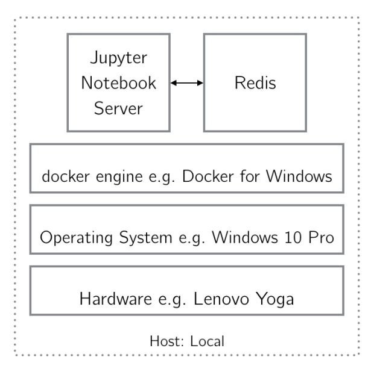

Build a Jupyter-Redis Application with Docker Compose
Next we will build a Docker Compose application to be a Jupyter Notebook
Server running in conjunction with a Redis server.

In the root directory for this chapter, we have a file called
docker- compose.yml which defines this application.
version: '3'
services:
this_jupyter:
build: docker/jupyter
ports:
- "80:8888"
volumes:
- .:/home/jovyan
this_redis:
image: redis
volumes:
- redis_data:/data
volumes:
redis_data:
The Compose file defines two services: this_jupyter and
this_redis and a volume, redis_data.
The this_jupyter service:
- Uses the
build: keyword to define the service, meaning it will
use a Dockerfile to build the image defining the service.
- Uses a
Dockerfile contained in the docker/jupyter
- Attaches the local directory (
.) to the (hopefully familiar)
jupyter WORKDIR, /home/jovyan, as specified by the
volumes: keyword.
- Forwards the exposed port
8888 to the port 8000 on the host
machine, as specified by the ports: keyword.
The this_redis service:
- Uses the
image: keyword to define the service, meaning it will
pull an image from the Docker Hub registry.
- Uses the
redis image.
- Attaches the volume
redis_data to the redis WORKDIR,
/data, as specified by the volumes: keyword.
:math:`square` Note The definition of every container defined in a
docker-compose.yml file must begin with either the image:
keyword or the build: keyword.
Run Your Application with Compose
Now, you use the docker-compose command line tool to start the
application. You will use the -d argument to specify that you wish
to launch the application in detached mode.
Listing 9-8. Start the Compose Application jupyter_redis
$ docker-compose up -d
Creating network "05-redis_default" with the default driver
Creating volume "05-redis_redis_data" with default driver
Building this_jupyter
Step 1/3 : FROM jupyter/datascience-notebook
---> 52b41d2a15ba
Step 2/3 : RUN conda install --yes redis
---> Running in f16856f4ce4e
Creating network “ch9jupyterredis_default” with the default driver
Creating ch9jupyterredis_this_redis_1 Creating
ch9jupyterredis_this_jupyter_1
The docker-compose up command first instructs the Docker Engine to
either 1. Check the local image cache for the specified image if the
container definition begins with the image: keyword. 2. Build the image
from a referenced Dockerfile if the container definition begins with the
build: keyword. Here, you have passed an image: keyword for both
containers. In this case, both images with which you are working are
currently in your image cache. Were they not in the cache, the Docker
engine would pull them from Docker Hub. Next, the docker-compose up
command instructs the Docker engine to create a network over which the
application’s containers can communicate. Here, a network called
ch9jupyterredis_default was created. Listing 9-14 shows how to use this
network. Finally, the docker-compose up command instructs the Docker
engine to create the containers defined in the docker-compose.yml file.
This is equivalent to running the two commands in Listing 9-9, with one
exception: the connection created by docker-compose is superior to the
link created by a –link flag, as you will see in a moment.